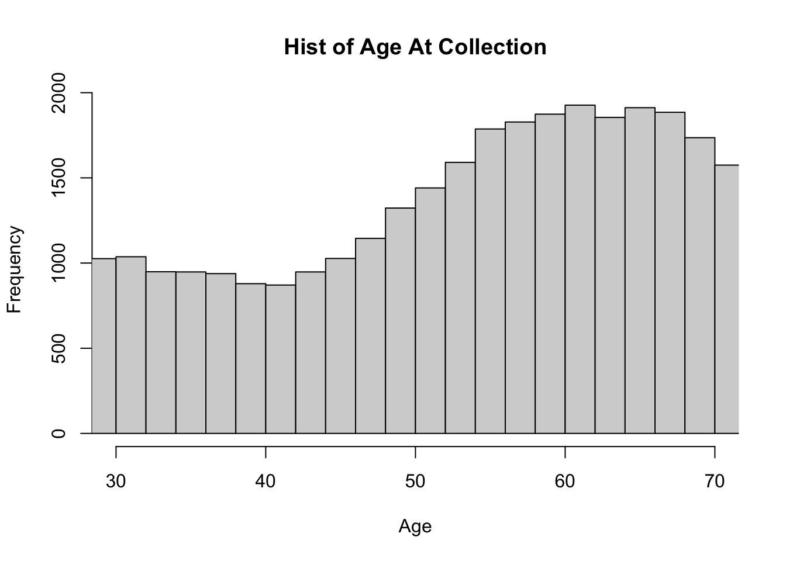
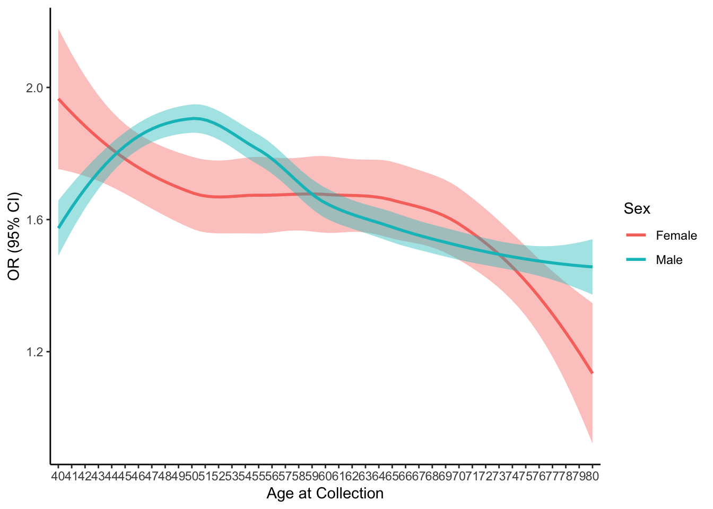
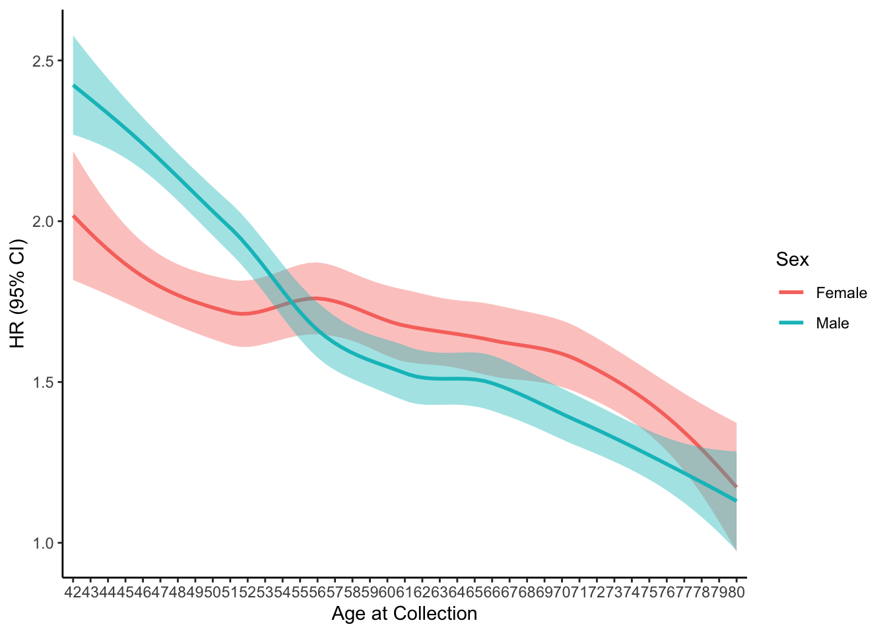

Last updated: 2023-09-15
Checks: 6 1
Knit directory: multistate2/
This reproducible R Markdown analysis was created with workflowr (version 1.7.0). The Checks tab describes the reproducibility checks that were applied when the results were created. The Past versions tab lists the development history.
The R Markdown file has unstaged changes. To know which version of
the R Markdown file created these results, you’ll want to first commit
it to the Git repo. If you’re still working on the analysis, you can
ignore this warning. When you’re finished, you can run
wflow_publish to commit the R Markdown file and build the
HTML.
Great job! The global environment was empty. Objects defined in the global environment can affect the analysis in your R Markdown file in unknown ways. For reproduciblity it’s best to always run the code in an empty environment.
The command set.seed(20230211) was run prior to running
the code in the R Markdown file. Setting a seed ensures that any results
that rely on randomness, e.g. subsampling or permutations, are
reproducible.
Great job! Recording the operating system, R version, and package versions is critical for reproducibility.
Nice! There were no cached chunks for this analysis, so you can be confident that you successfully produced the results during this run.
Great job! Using relative paths to the files within your workflowr project makes it easier to run your code on other machines.
Great! You are using Git for version control. Tracking code development and connecting the code version to the results is critical for reproducibility.
The results in this page were generated with repository version 04acb66. See the Past versions tab to see a history of the changes made to the R Markdown and HTML files.
Note that you need to be careful to ensure that all relevant files for
the analysis have been committed to Git prior to generating the results
(you can use wflow_publish or
wflow_git_commit). workflowr only checks the R Markdown
file, but you know if there are other scripts or data files that it
depends on. Below is the status of the Git repository when the results
were generated:
Ignored files:
Ignored: .DS_Store
Ignored: analysis/.DS_Store
Ignored: code/.DS_Store
Ignored: data/
Ignored: output/
Ignored: plots/.DS_Store
Unstaged changes:
Modified: analysis/forKaavyaandRohan.Rmd
Note that any generated files, e.g. HTML, png, CSS, etc., are not included in this status report because it is ok for generated content to have uncommitted changes.
These are the previous versions of the repository in which changes were
made to the R Markdown (analysis/forKaavyaandRohan.Rmd) and
HTML (docs/forKaavyaandRohan.html) files. If you’ve
configured a remote Git repository (see ?wflow_git_remote),
click on the hyperlinks in the table below to view the files as they
were in that past version.
| File | Version | Author | Date | Message |
|---|---|---|---|---|
| html | 04acb66 | Sarah Urbut | 2023-09-15 | Update |
| Rmd | 291f497 | Sarah Urbut | 2023-09-15 | Update |
| html | 291f497 | Sarah Urbut | 2023-09-15 | Update |
Here we consider the distribution of ages. Please note that I replace all controls with age of death or the end of study period (6/21/22), whichever came first. For the hazard ratio analysis in part 2, you’ll note we use age as the time scale and account for left censoring to eamine age specific effects with adjusted entry times.
m=merge(df[,c("Biobank_Subject_ID","IID_x","SUM_RESULT_cardiogram","SUM_RESULT_krishna_female","AGE","PC1","PC2","PC3","PC4","PC5","PC6","PC7","PC8","PC9")], mg[,c("Biobank_Subject_ID","Sex","Incd_cad","Has_cad","Prev_cad","cad_Date","Age_Genotyping","Date_of_Birth","Date_of_Death")],by="Biobank_Subject_ID")
##replace cad date if dead or never censored
m$dead=ifelse(!is.na(m$Date_of_Death),1,0)
i=intersect(which(m$Has_cad==0),which(m$dead==1))
m[i,"cad_Date"]=m[i,"Date_of_Death"]
i2=intersect(which(m$Has_cad==0),which(m$dead==0))
m[i2,"cad_Date"]=rep(as.Date("2022-06-21"),length(i2))
## exclude with prevalent CAD
m=m[m$Prev_cad==0,]
m$round.age=round(m$Age_Genotyping,0)
m$cardioprs=scale(m$SUM_RESULT_cardiogram)
m$cad.age=as.numeric(difftime(m$cad_Date,m$Date_of_Birth,units = "days")/365.25)
hist(m$round.age,freq = T,xlab="Age",xlim=c(30,70),nclass=50,main="Hist of Age At Collection")
| Version | Author | Date |
|---|---|---|
| 291f497 | Sarah Urbut | 2023-09-15 |

| Version | Author | Date |
|---|---|---|
| 291f497 | Sarah Urbut | 2023-09-15 |
Here, we plot for individuals within 5 years of the age considered along the x axis. We use an analysis that accounts for left censoring (i.e., individuals may have entered at different times and been followed) and will also give us the average hazard over a given period for individuals starting at different ages. Importantely, this corrects for censoring, such that individuals who die of other causes will drop out of the risk set, thus augmenting their cause-specific hazard. Furthermore, in the OR, living longer exposes one to a longer period of possible events, while a time to event analysis will adjust for this by providing the infinitesimal hazard conditional on survival. Thus if women have longer life spans, their OR over the life course might be higher than the comparable HR.

| Version | Author | Date |
|---|---|---|
| 291f497 | Sarah Urbut | 2023-09-15 |
Now return the average OR and HR
(Intercept) cardioprs PC1 PC2 PC3
1.428420e-03 1.480631e+00 1.055818e+08 5.915697e+10 6.468761e-07
PC4 PC5 Age_Genotyping
1.908672e+02 8.645207e+02 1.039868e+00 2.5 % 97.5 %
(Intercept) 6.698588e-04 3.045990e-03
cardioprs 1.331021e+00 1.647057e+00
PC1 1.069200e-09 1.042603e+25
PC2 2.034412e-09 1.720176e+30
PC3 1.224397e-12 3.417590e-01
PC4 3.623212e-21 1.005469e+25
PC5 1.904450e-01 3.924472e+06
Age_Genotyping 1.032119e+00 1.047675e+00 (Intercept) cardioprs PC1 PC2 PC3
6.249814e-04 1.542709e+00 4.769897e-12 8.659698e+04 2.905105e-01
PC4 PC5 Age_Genotyping
4.894481e-21 6.312188e-04 1.052838e+00 2.5 % 97.5 %
(Intercept) 2.401337e-04 1.626601e-03
cardioprs 1.351886e+00 1.760468e+00
PC1 1.569016e-34 1.450075e+11
PC2 2.425729e-20 3.091457e+29
PC3 9.179724e-09 9.193782e+06
PC4 1.027424e-49 2.331652e+08
PC5 6.351840e-09 6.272784e+01
Age_Genotyping 1.043321e+00 1.062442e+00For the hazard analysis:
Call:
coxph(formula = Surv(time = Age_Genotyping, time2 = cad.age,
event = Incd_cad) ~ cardioprs + PC1 + PC2 + PC3 + PC4 + PC5,
data = m[m$Sex == "Male", ])
n= 17078, number of events= 385
(15 observations deleted due to missingness)
coef exp(coef) se(coef) z Pr(>|z|)
cardioprs 3.902e-01 1.477e+00 5.372e-02 7.264 3.77e-13 ***
PC1 2.031e+01 6.589e+08 1.953e+01 1.040 0.2985
PC2 2.445e+01 4.140e+10 2.257e+01 1.083 0.2787
PC3 -1.544e+01 1.966e-07 6.573e+00 -2.349 0.0188 *
PC4 1.021e+01 2.729e+04 2.637e+01 0.387 0.6985
PC5 6.699e+00 8.115e+02 4.215e+00 1.589 0.1120
---
Signif. codes: 0 '***' 0.001 '**' 0.01 '*' 0.05 '.' 0.1 ' ' 1
exp(coef) exp(-coef) lower .95 upper .95
cardioprs 1.477e+00 6.769e-01 1.330e+00 1.641e+00
PC1 6.589e+08 1.518e-09 1.567e-08 2.771e+25
PC2 4.140e+10 2.415e-11 2.551e-09 6.719e+29
PC3 1.966e-07 5.086e+06 4.994e-13 7.741e-02
PC4 2.729e+04 3.664e-05 9.798e-19 7.603e+26
PC5 8.115e+02 1.232e-03 2.094e-01 3.144e+06
Concordance= 0.622 (se = 0.015 )
Likelihood ratio test= 72.52 on 6 df, p=1e-13
Wald test = 74.32 on 6 df, p=5e-14
Score (logrank) test = 74.46 on 6 df, p=5e-14Call:
coxph(formula = Surv(time = Age_Genotyping, time2 = cad.age,
event = Incd_cad) ~ cardioprs + PC1 + PC2 + PC3 + PC4 + PC5,
data = m[m$Sex == "Female", ])
n= 22471, number of events= 238
(13 observations deleted due to missingness)
coef exp(coef) se(coef) z Pr(>|z|)
cardioprs 4.400e-01 1.553e+00 6.804e-02 6.466 1e-10 ***
PC1 -7.337e+00 6.512e-04 2.743e+01 -0.267 0.789
PC2 2.882e+00 1.785e+01 2.939e+01 0.098 0.922
PC3 -7.908e+00 3.680e-04 9.129e+00 -0.866 0.386
PC4 -3.956e+01 6.585e-18 3.355e+01 -1.179 0.238
PC5 -4.806e+00 8.180e-03 5.869e+00 -0.819 0.413
---
Signif. codes: 0 '***' 0.001 '**' 0.01 '*' 0.05 '.' 0.1 ' ' 1
exp(coef) exp(-coef) lower .95 upper .95
cardioprs 1.553e+00 6.440e-01 1.359e+00 1.774e+00
PC1 6.512e-04 1.536e+03 2.906e-27 1.459e+20
PC2 1.785e+01 5.601e-02 1.713e-24 1.861e+26
PC3 3.680e-04 2.718e+03 6.244e-12 2.168e+04
PC4 6.585e-18 1.518e+17 1.812e-46 2.393e+11
PC5 8.180e-03 1.223e+02 8.258e-08 8.103e+02
Concordance= 0.623 (se = 0.018 )
Likelihood ratio test= 48.88 on 6 df, p=8e-09
Wald test = 48.84 on 6 df, p=8e-09
Score (logrank) test = 49.04 on 6 df, p=7e-09
R version 4.3.1 (2023-06-16)
Platform: aarch64-apple-darwin20 (64-bit)
Running under: macOS Ventura 13.5.2
Matrix products: default
BLAS: /Library/Frameworks/R.framework/Versions/4.3-arm64/Resources/lib/libRblas.0.dylib
LAPACK: /Library/Frameworks/R.framework/Versions/4.3-arm64/Resources/lib/libRlapack.dylib; LAPACK version 3.11.0
locale:
[1] en_US.UTF-8/en_US.UTF-8/en_US.UTF-8/C/en_US.UTF-8/en_US.UTF-8
time zone: America/New_York
tzcode source: internal
attached base packages:
[1] stats graphics grDevices utils datasets methods base
other attached packages:
[1] ggplot2_3.4.3 dplyr_1.1.2 survival_3.5-5 data.table_1.14.8
loaded via a namespace (and not attached):
[1] sass_0.4.7 utf8_1.2.3 generics_0.1.3 stringi_1.7.12
[5] lattice_0.21-8 digest_0.6.33 magrittr_2.0.3 evaluate_0.21
[9] grid_4.3.1 fastmap_1.1.1 rprojroot_2.0.3 workflowr_1.7.0
[13] jsonlite_1.8.7 Matrix_1.6-0 whisker_0.4.1 promises_1.2.0.1
[17] mgcv_1.8-42 fansi_1.0.4 scales_1.2.1 jquerylib_0.1.4
[21] cli_3.6.1 rlang_1.1.1 munsell_0.5.0 splines_4.3.1
[25] withr_2.5.0 cachem_1.0.8 yaml_2.3.7 tools_4.3.1
[29] colorspace_2.1-0 httpuv_1.6.11 vctrs_0.6.3 R6_2.5.1
[33] lifecycle_1.0.3 git2r_0.32.0 stringr_1.5.0 fs_1.6.3
[37] pkgconfig_2.0.3 pillar_1.9.0 bslib_0.5.0 later_1.3.1
[41] gtable_0.3.3 glue_1.6.2 Rcpp_1.0.11 highr_0.10
[45] xfun_0.39 tibble_3.2.1 tidyselect_1.2.0 rstudioapi_0.15.0
[49] knitr_1.43 farver_2.1.1 nlme_3.1-162 htmltools_0.5.5
[53] labeling_0.4.2 rmarkdown_2.23 compiler_4.3.1